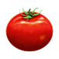
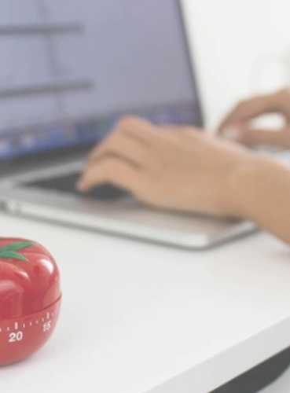
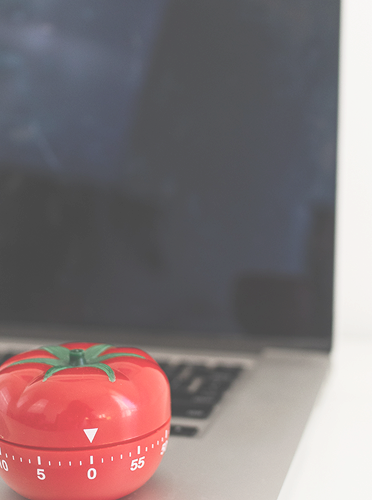

Selecione uma tarefa de sua lista
A técnica Pomodoro é um método de gestão de tempo criado por Franceso Cirillo, que ajuda a manter o foco e evitar a procastinação. A idéia é dividir o trabalho em blocos curtos de tempo chamados pomodoro, seguidos de pequenas pausas para descanso.


Dedique-se por 25 minutos na execução da tarefa escolhida
Faça uma pausa de 5 minutos
Inicie outro pomodoro (25minutos de dedicação + 5 minutos de pausa)
Após 4 "pomodoros faça uma pausa de até 30 minutos

Inicie outro "ciclo de pomodoros"